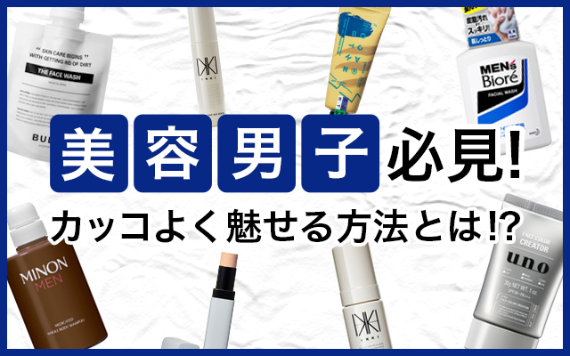

メンズコスメ バナー
Photoshop
制作時期：2019年12月 / 制作時間：2人日
株式会社アイスタイルが運営する「@cosme」に掲載したメンズコスメに関する記事へのバナーを制作しました。「美容男子」を強調し、「カッコよく見せる方法とは!?」と問いかけることでメンズに興味を持たせる工夫を行いました。また、全体の色を暗めの青に統一することで「大人なクール感」を表現しました。
Photoshop
制作時期：2019年12月 / 制作時間：2人日
株式会社アイスタイルが運営する「@cosme」に掲載したメンズコスメに関する記事へのバナーを制作しました。「美容男子」を強調し、「カッコよく見せる方法とは!?」と問いかけることでメンズに興味を持たせる工夫を行いました。また、全体の色を暗めの青に統一することで「大人なクール感」を表現しました。